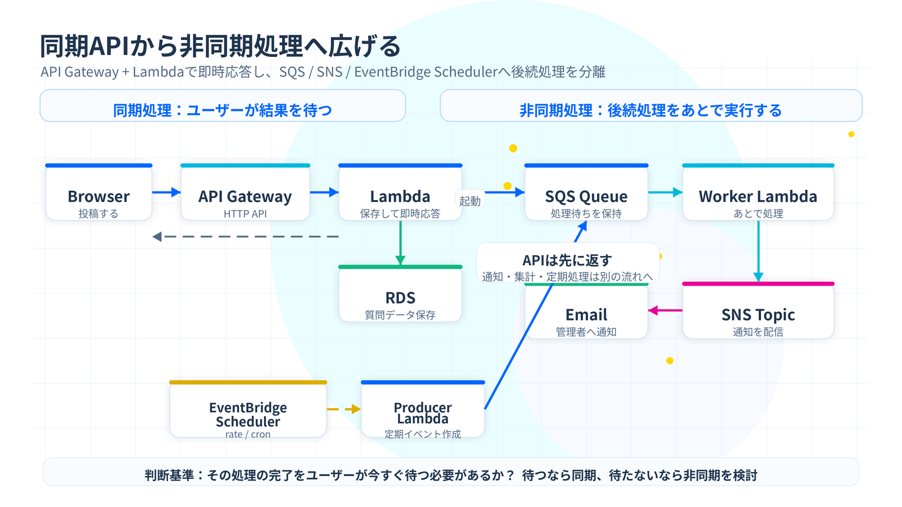
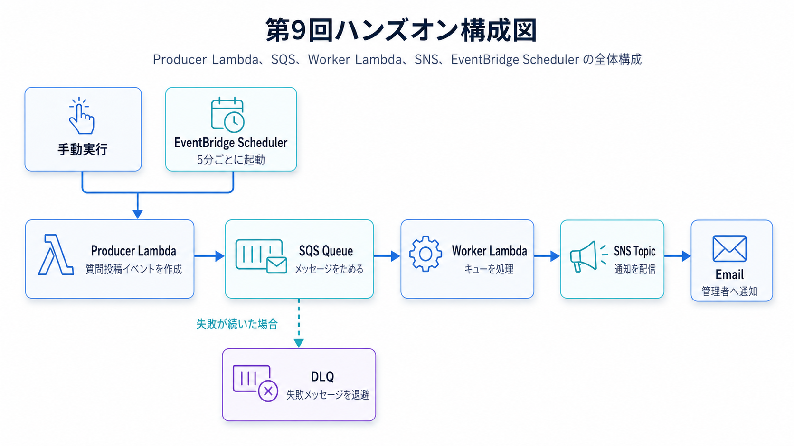
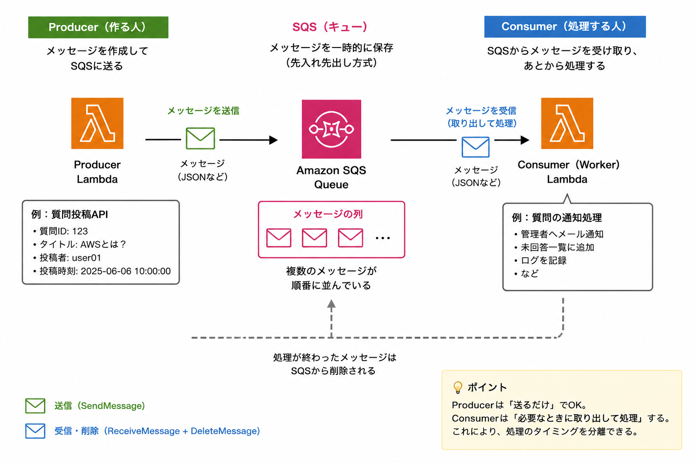

第9回：イベント駆動アーキテクチャ (SQS, SNS, EventBridge)
使用資料
- SQS（AWS Black Belt）
- SNS（AWS Black Belt）
- EventBridge（AWS Black Belt）
- EventBridge Scheduler（AWS Black Belt）
- ハンズオン：AWS Workshops の「Serverless Event-Driven Architecture」
※この回の勉強会では上記資料を使用しました。なお、「はじめに」以降の内容は上記資料をもとに作成したものではなく、管理人の備忘録として記載しています。作成途中の内容を含むため、正確性は保証できません。
1. はじめに
第8回では、API Gateway と Lambda を使って、HTTPリクエストを受け取り、Lambdaで処理するサーバーレスAPIの基本を学びました。
API Gateway と Lambda を使うと、サーバーを自分で管理しなくてもAPIを作れます。これは非常に便利です。
しかし、実際のシステムでは、すべての処理を1回のAPIリクエストの中で完結させようとすると、問題が起きやすくなります。
たとえば、質問板アプリで「質問を投稿する」処理を考えてみます。
質問投稿API
↓
入力チェック
↓
RDSへ保存
↓
管理者へメール通知
↓
未回答一覧の更新
↓
ログ集計
↓
レスポンス返却一見すると、1つのLambdaで全部やれば簡単そうに見えます。
しかし、実務ではこの作り方は危険です。
なぜなら、メール通知が遅いだけでAPI全体が遅くなったり、通知処理でエラーが出ただけで質問投稿まで失敗扱いになったりするからです。
本来、ユーザーにとって一番大事なのは「質問が投稿できたこと」です。
管理者通知や集計処理は、質問投稿のあとで少し遅れて実行されても問題ない場合が多いです。
このように、すぐ終わらせるべき処理と、あとで処理してもよい処理を分ける考え方が重要です。
この回では、AWSで非同期処理やイベント駆動設計を実現する代表的なサービスとして、以下の3つを学びます。
- Amazon SQS
- Amazon SNS
- Amazon EventBridge Scheduler
今回の目的は、サービス名を暗記することではありません。
目的は、次の考え方を身につけることです。
今すぐ返すべき処理と、あとで処理してよい処理を分けるこの考え方がわかると、壊れにくく、拡張しやすいシステムを設計しやすくなります。

2. この回のゴール
このセッションのゴールは、以下のとおりです。
- 同期処理と非同期処理の違いを説明できる
- SQSが「処理待ちのメッセージをためるキュー」であることを理解する
- SNSが「複数の宛先へ通知を配る仕組み」であることを理解する
- EventBridge Schedulerが「決まった時間や間隔で処理を起動する仕組み」であることを理解する
- LambdaとSQSを連携し、キューに入ったメッセージを非同期で処理できる
- LambdaからSNSへ通知を送信できる
- EventBridge SchedulerからLambdaを定期実行できる
- DLQ、可視性タイムアウト、リトライ、冪等性の基本を理解する
この回が終わると、次のような構成を自分で作れるようになります。
EventBridge Scheduler
↓
Producer Lambda
↓
SQS
↓
Worker Lambda
↓
SNS
↓
Email Notification3. 今回作る構成
今回のハンズオンでは、質問板アプリを題材にして、質問投稿後の通知処理を非同期化する構成を作ります。
実際の質問板アプリ本体に組み込む前段階として、まずはシンプルな検証用構成を作ります。
3.1 構成概要
手動実行 または EventBridge Scheduler
↓
Producer Lambda
↓
SQS Queue
↓
Worker Lambda
↓
SNS Topic
↓
Email
3.2 各コンポーネントの役割
| コンポーネント | 役割 |
|---|---|
| Producer Lambda | 質問投稿イベントを作り、SQSへメッセージを送る |
| SQS Queue | 処理待ちのメッセージをためる |
| Worker Lambda | SQSからメッセージを受け取り、処理する |
| SNS Topic | 通知を配信する |
| Email Subscription | SNSから送られた通知メールを受け取る |
| EventBridge Scheduler | 決まった間隔でProducer Lambdaを起動する |
| DLQ | 処理に失敗し続けたメッセージを退避する |
3.3 今回の学習ポイント
今回の構成で重要なのは、Producer Lambda と Worker Lambda を分けることです。
Producer Lambdaは、メッセージをSQSに入れるだけです。
Worker Lambdaは、SQSに入ったメッセージをあとから処理します。
つまり、処理が以下のように分離されます。
ユーザーに近い処理
→ すぐ終わらせる
時間がかかる処理・失敗しても再試行したい処理
→ SQSに入れてあとで処理するこの分離が、非同期処理の基本です。
4. なぜ非同期処理が必要なのか
4.1 同期処理とは
同期処理とは、処理が終わるまで呼び出し元が待つ方式です。
たとえば、ブラウザからAPIを呼び出し、LambdaがRDSに保存し、その結果をブラウザに返す処理は同期処理です。
ブラウザ
↓ リクエスト
API Gateway
↓
Lambda
↓
RDS
↓
Lambda
↓ レスポンス
ブラウザ同期処理はわかりやすいです。
ユーザーがボタンを押して、その結果がすぐ画面に返ってきます。
ログイン、投稿、検索、詳細表示など、ユーザーが結果をすぐ知りたい処理には同期処理が向いています。
4.2 同期処理だけで作ると何が困るのか
同期処理だけでシステムを作ると、以下の問題が起きやすくなります。
1つ目は、レスポンスが遅くなることです。
APIの中でメール送信、画像処理、外部API連携、集計処理などを全部実行すると、ユーザーはそれらが終わるまで待たされます。
2つ目は、一部の処理の失敗が全体の失敗になりやすいことです。
たとえば、質問自体はDBに保存できたのに、メール通知だけ失敗したとします。
このとき、API全体をエラーにしてしまうと、ユーザーから見ると「質問投稿に失敗した」ように見えてしまいます。
しかし実際には、質問は保存されています。
このような状態は、ユーザー体験としても、運用としても扱いづらいです。
3つ目は、負荷が一気に集中したときに弱いことです。
たとえば、勉強会直後に質問が大量に投稿された場合、すべての通知処理や集計処理をその場で実行すると、Lambda、DB、外部サービスに一気に負荷がかかります。
4.3 非同期処理とは
非同期処理とは、今すぐ終わらせる必要がない処理を、あとで別の処理として実行する方式です。
質問板アプリで考えると、以下のようになります。
質問投稿API
↓
RDSへ保存
↓
SQSへメッセージ送信
↓
ユーザーへレスポンス
その後、別のLambdaがSQSを処理
↓
SNSで管理者へ通知ユーザーへのレスポンスは早く返せます。
通知処理が一時的に失敗しても、質問投稿自体は成功として扱えます。
さらに、SQSにメッセージをためておけるため、後続処理が一時的に遅くなっても、メッセージを失いにくくなります。
4.4 同期処理と非同期処理の使い分け
| 処理 | 向いている方式 | 理由 |
|---|---|---|
| ログイン | 同期 | 結果をすぐ返す必要がある |
| 質問投稿のDB保存 | 同期 | 保存成功・失敗をユーザーに伝える必要がある |
| 管理者への通知 | 非同期 | 少し遅れてもよい |
| 集計処理 | 非同期 | ユーザーを待たせる必要がない |
| 画像変換 | 非同期 | 時間がかかることがある |
| 外部API連携 | 非同期にしたい場合が多い | 外部サービスの遅延・障害の影響を分離したい |
| 毎日決まった時刻のチェック | スケジュール実行 | ユーザー操作をきっかけにしない |
実務では、まず次の問いを考えると判断しやすいです。
この処理の完了を、ユーザーは今すぐ待つ必要があるか？答えが「はい」なら同期処理です。
答えが「いいえ」なら、非同期処理を検討します。
5. Amazon SQSとは
5.1 SQSの役割
Amazon SQSは、メッセージキューのサービスです。
キューとは、処理待ちのメッセージを一時的にためておく場所です。
身近な例で言うと、飲食店の注文票に近いです。
お客さんが注文する
↓
注文票が並ぶ
↓
厨房が順番に処理する注文が一気に来ても、厨房は注文票を見ながら順番に処理できます。
SQSも同じです。
Producer
↓ メッセージ送信
SQS
↓ メッセージ受信
Consumer
Producerは、メッセージを送る側です。
Consumerは、メッセージを受け取って処理する側です。
今回のハンズオンでは、以下の対応になります。
| 役割 | 今回の構成 |
|---|---|
| Producer | Producer Lambda |
| Queue | SQS Queue |
| Consumer | Worker Lambda |
5.2 SQSを使う理由
SQSを使う理由は、処理を分離するためです。
SQSを入れることで、送る側と処理する側が直接つながらなくなります。
SQSなし:
Producer → Consumer
SQSあり:
Producer → SQS → ConsumerSQSなしの場合、Consumerが遅いとProducerも影響を受けます。
SQSありの場合、ProducerはSQSにメッセージを入れれば一旦処理を終えられます。
Consumerは自分のペースでメッセージを処理できます。
これにより、以下のメリットがあります。
- 後続処理が遅くても、前段の処理を早く終えられる
- 一時的な負荷をキューで吸収できる
- 処理に失敗したメッセージを再試行できる
- 処理に失敗し続けたメッセージをDLQに退避できる
- ProducerとConsumerを疎結合にできる
疎結合とは、システムの部品同士の依存を弱くすることです。
依存が弱くなると、一部の変更や障害が全体に波及しにくくなります。
5.3 Standard QueueとFIFO Queue
SQSには、大きく分けて2種類のキューがあります。
- Standard Queue
- FIFO Queue
| 種類 | 特徴 | 向いている用途 |
|---|---|---|
| Standard Queue | 高スループット。順序は厳密には保証されない。重複配信される可能性がある | 通知、ログ処理、一般的な非同期処理 |
| FIFO Queue | 順序を守る。重複を抑える仕組みがある | 注文処理、決済処理など順序が重要な処理 |
今回のハンズオンでは、Standard Queueを使います。
理由は、質問投稿通知では厳密な順序が必須ではないからです。
たとえば、質問Aの通知と質問Bの通知の順番が多少前後しても、大きな問題にはなりにくいです。
一方、銀行の送金処理や在庫引当のように順番が重要な処理では、FIFO Queueを検討します。
5.4 Standard Queueでは冪等性が重要
SQS Standard Queueでは、メッセージが重複して配信される可能性があります。
そのため、Consumer側の処理は、同じメッセージが2回来ても壊れないように作る必要があります。
これを冪等性と呼びます。
冪等性とは、同じ処理を何度実行しても、結果が変わらない性質です。
たとえば、同じ通知メールが2回来る程度なら許容できる場合もあります。
しかし、同じ請求処理が2回走ると重大な問題になります。
そのため、非同期処理では以下のような設計を考えます。
- eventId のような業務上の一意キーをDBに記録し、同じイベントが再実行された場合はスキップする。
- 同じ通知を複数回送っても重大な問題にならないようにする
- 更新処理では上書き型にする
- 加算処理では二重加算を防ぐ
「SQSを使えば必ず1回だけ処理される」と考えるのは危険です。
特にStandard Queueでは、「複数回処理されても壊れない」ように作ることが重要です。
5.5 可視性タイムアウト
SQSで特に重要なのが、可視性タイムアウトです。
可視性タイムアウトとは、あるConsumerがメッセージを受け取ったあと、そのメッセージを一定時間ほかのConsumerから見えなくする仕組みです。
流れは以下のとおりです。
1. Worker LambdaがSQSからメッセージを受け取る
2. そのメッセージは一時的に見えなくなる
3. Worker Lambdaが処理に成功する
4. メッセージが削除される
もしWorker Lambdaが処理に失敗した場合、メッセージは削除されません。
その場合、可視性タイムアウトが切れたあと、メッセージは再び見えるようになります。
すると、再度処理されます。
ここで誤解しやすい点があります。
可視性タイムアウトは、メッセージの保存期間ではありません。
可視性タイムアウトは、「処理中のメッセージを一時的に隠す時間」です。
メッセージの保存期間は、別の設定です。
5.6 LambdaとSQSを組み合わせるときの可視性タイムアウト
LambdaでSQSを処理する場合、可視性タイムアウトはLambdaのタイムアウトより十分に長く設定します。
目安としては、以下です。
SQSの可視性タイムアウト
>= Lambdaのタイムアウト × 6 + バッチングウィンドウ今回のハンズオンでは、Worker Lambdaのタイムアウトを10秒にします。
バッチングウィンドウは0秒にします。
そのため、可視性タイムアウトは少なくとも60秒以上が目安です。
今回は少し余裕を見て、70秒に設定します。
10秒 × 6 + 0秒 = 60秒
→ 今回は70秒に設定5.7 DLQ
DLQは Dead Letter Queue の略です。
処理に失敗し続けたメッセージを退避するためのキューです。
たとえば、あるメッセージが3回処理に失敗したら、通常のキューからDLQへ移動させる、という設定ができます。
SQS Queue
↓ 失敗
SQS Queue
↓ 失敗
SQS Queue
↓ 失敗
DLQ
DLQは、失敗したメッセージを調査するために使います。
DLQに入ったメッセージは、自動的に解決されるわけではありません。
運用者が確認し、原因を調べる必要があります。
たとえば、以下のような原因が考えられます。
- メッセージ形式が壊れている
- 必須項目が足りない
- 後続の外部サービスがエラーを返している
- Lambdaのコードにバグがある
- IAM権限が足りない
実務では、DLQを設定しただけで安心してはいけません。
DLQにメッセージが入ったことを検知する仕組みも必要です。
6. Amazon SNSとは
6.1 SNSの役割
Amazon SNSは、通知を配信するサービスです。
SNSは、Topicという単位で通知先をまとめます。
TopicにメッセージをPublishすると、そのTopicを購読している宛先にメッセージが配信されます。
Publisher
↓
SNS Topic
├─ Email
├─ Lambda
├─ SQS
└─ HTTPS Endpoint
SNSは、1つのメッセージを複数の宛先に配るのが得意です。
このような形を Pub/Sub と呼びます。
Pub/Subは Publish / Subscribe の略です。
- Publish: メッセージを発行する
- Subscribe: メッセージを購読する
6.2 SNSを使う理由
SNSを使う理由は、通知先を柔軟に増やせるからです。
たとえば、最初は管理者にメール通知するだけだったとします。
Worker Lambda
↓
SNS Topic
↓
Emailあとから、Slack通知や別のLambda処理も追加したくなるかもしれません。
SNSを使っていれば、Publisher側のコードを大きく変えずに購読先を増やせます。
Worker Lambda
↓
SNS Topic
├─ Email
├─ Lambda
└─ SQS通知先が増えても、Worker LambdaはSNS TopicにPublishするだけです。
このように、SNSも疎結合な設計に役立ちます。
6.3 SNSとSQSの違い
SQSとSNSは名前が似ていますが、役割はかなり違います。
| サービス | 主な役割 | イメージ |
|---|---|---|
| SQS | 処理待ちメッセージをためる | 行列・順番待ち |
| SNS | 通知を複数宛先に配る | 放送・配信 |
SQSは、Consumerが処理するまでメッセージを保持します。
SNSは、TopicにPublishされたメッセージを購読者へ配信します。
単純化すると、以下のように覚えるとよいです。
あとで処理したいなら SQS
みんなに知らせたいなら SNS6.4 SNSのフィルタリング
SNSでは、サブスクリプションごとにフィルターポリシーを設定できます。
たとえば、以下のように通知の種類を分けられます。
SNS Topic
├─ eventType = QUESTION_CREATED のときだけ管理者へ通知
├─ eventType = ANSWER_CREATED のときだけ投稿者へ通知
└─ eventType = ERROR のときだけ運用担当へ通知今回のハンズオンでは、基本を優先してフィルタリングまでは実装しません。
ただし、実務では非常に便利な機能です。
通知先が増えるほど、SNSフィルタリングの価値が出てきます。
7. Amazon EventBridge Schedulerとは
7.1 EventBridge Schedulerの役割
EventBridge Schedulerは、指定した時間や間隔でAWSサービスを呼び出すためのサービスです。
たとえば、以下のような処理に使えます。
- 毎日9:00にLambdaを実行する
- 5分ごとにバッチ処理を起動する
- 1回だけ指定時刻に処理を実行する
- 毎週月曜日にレポート作成処理を起動する
今回のハンズオンでは、5分ごとにProducer Lambdaを実行するスケジュールを作ります。
EventBridge Scheduler
↓ 5分ごと
Producer Lambda
↓
SQS
7.2 cronとrateとat
EventBridge Schedulerでは、主に以下のようなスケジュール表現を使います。
| 種類 | 例 | 意味 |
|---|---|---|
| rate | rate(5 minutes) |
5分ごと |
| cron | cron(0 9 ? * MON-FRI *) |
平日9:00 |
| at | at(2026-06-06T12:00:00) |
指定時刻に1回だけ |
rateは、一定間隔で実行したいときに使います。
cronは、曜日や時刻を細かく指定したいときに使います。
atは、1回だけ実行したいときに使います。
7.3 EventBridge Schedulerの注意点
EventBridge Schedulerは、秒単位で完全にぴったり実行される仕組みではありません。
スケジュール実行は、おおむね指定した時刻の範囲で呼び出されます。
そのため、「1秒単位で厳密に実行したい処理」には向きません。
一方で、日次バッチ、定期チェック、定期通知、古いデータの削除などには非常に向いています。
7.4 EventBridge SchedulerとEventBridge Ruleの違い
AWSには、以前からEventBridge Ruleのスケジュール実行機能がありました。
ただし、現在はスケジュール実行にはEventBridge Schedulerを使うのが基本です。
EventBridge Schedulerの方が、スケジュール管理に特化しており、柔軟な設定ができます。
この勉強会では、古い書き方を覚えるより、現在使うべきEventBridge Schedulerを中心に扱います。
8. 設計の考え方
8.1 どのサービスを使うべきか
SQS、SNS、EventBridge Schedulerは、それぞれ役割が違います。
| やりたいこと | 使うサービス |
|---|---|
| 処理をあと回しにしたい | SQS |
| 処理失敗時に再試行したい | SQS |
| 処理失敗メッセージを退避したい | SQS + DLQ |
| 複数の宛先へ通知したい | SNS |
| メール通知したい | SNS |
| 決まった時間に処理を起動したい | EventBridge Scheduler |
| 毎日・毎週のバッチを動かしたい | EventBridge Scheduler |
| APIを外部から呼び出したい | API Gateway + Lambda |
| ユーザーにすぐ結果を返したい | 同期処理 |
8.2 よくある組み合わせ
パターン1：API + SQS + Lambda
API Gateway
↓
Lambda
↓
SQS
↓
Worker LambdaAPIの後続処理を非同期化したいときに使います。
例：
- 画像変換
- メール送信
- 外部API連携
- 集計処理
- ログ加工
パターン2：Lambda + SNS
Lambda
↓
SNS
├─ Email
├─ SQS
└─ Lambda1つのイベントを複数の処理に広げたいときに使います。
例：
- 管理者通知
- 運用アラート
- 複数システムへのイベント配信
パターン3：EventBridge Scheduler + Lambda
EventBridge Scheduler
↓
Lambda決まった時間に処理を実行したいときに使います。
例：
- 毎朝の集計
- 未回答質問のチェック
- 古いデータの削除
- 定期レポート作成
パターン4：EventBridge Scheduler + Lambda + SQS + SNS
EventBridge Scheduler
↓
Lambda
↓
SQS
↓
Lambda
↓
SNS定期的に処理を起動し、後続処理はキューで分離し、結果を通知したいときに使います。
今回のハンズオンは、このパターンに近い構成です。
9. ハンズオン概要
9.1 作るもの
今回作るものは、質問投稿イベントを非同期で通知するミニシステムです。
流れは以下のとおりです。
1. Producer Lambdaを実行する
2. Producer LambdaがSQSへメッセージを送る
3. SQSがWorker Lambdaを起動する
4. Worker LambdaがSNSへ通知を送る
5. SNSがメールを送る
6. EventBridge SchedulerでProducer Lambdaを定期実行する9.2 前提条件
このハンズオンでは、以下を前提にします。
- AWSアカウントを持っている
- AWS CLIが利用できる
- AWS CLIで認証済みである
- リージョンは ap-northeast-1 を使う
- Node.js と npm がローカルで使える
- zip コマンドが使える
- メールを受信できるアドレスがある
AWS CLIの認証確認は、以下で行えます。
aws sts get-caller-identityアカウントIDなどが表示されれば、AWS CLIの認証はできています。
9.3 課金に関する注意
このハンズオンでは、SQS、SNS、Lambda、EventBridge Scheduler、CloudWatch Logsを使用します。
少量の利用であれば大きな金額にはなりにくいですが、AWSは従量課金です。
特に、EventBridge Schedulerを作成したまま放置すると、定期的にLambdaが実行され続けます。
ハンズオン終了後は、必ずクリーンアップしてください。
10. ハンズオン手順
10.1 作業ディレクトリを作成する
まず、作業用ディレクトリを作成します。
mkdir session9-event-handson
cd session9-event-handson今回使う変数を設定します。
export AWS_REGION=ap-northeast-1
export APP=session9-event
export ACCOUNT_ID=$(aws sts get-caller-identity --query Account --output text)確認します。
echo $AWS_REGION
echo $APP
echo $ACCOUNT_ID10.2 SNS Topicを作成する
まず、通知先となるSNS Topicを作成します。
SNS_TOPIC_ARN=$(aws sns create-topic \
--name ${APP}-topic \
--region $AWS_REGION \
--query TopicArn \
--output text)確認します。
echo $SNS_TOPIC_ARN次に、メールアドレスをSNS TopicにSubscribeします。
以下の
YOUR_EMAIL_ADDRESS
は、自分が受信できるメールアドレスに置き換えてください。
export NOTIFY_EMAIL="YOUR_EMAIL_ADDRESS"aws sns subscribe \
--topic-arn "$SNS_TOPIC_ARN" \
--protocol email \
--notification-endpoint "$NOTIFY_EMAIL" \
--region $AWS_REGION実行後、指定したメールアドレスに確認メールが届きます。
メール内の Confirm subscription をクリックしてください。
確認が完了するまで、SNSからメールは届きません。
10.3 SQSのDLQを作成する
次に、失敗したメッセージを退避するためのDLQを作成します。
DLQ_URL=$(aws sqs create-queue \
--queue-name ${APP}-dlq \
--region $AWS_REGION \
--query QueueUrl \
--output text)DLQのARNを取得します。
DLQ_ARN=$(aws sqs get-queue-attributes \
--queue-url "$DLQ_URL" \
--attribute-names QueueArn \
--region $AWS_REGION \
--query 'Attributes.QueueArn' \
--output text)確認します。
echo $DLQ_URL
echo $DLQ_ARN10.4 メインのSQS Queueを作成する
次に、通常処理用のSQS Queueを作成します。
このキューには、以下の設定を入れます。
- VisibilityTimeout: 70秒
- MessageRetentionPeriod: 4日
- RedrivePolicy: 3回失敗したらDLQへ移動
今回、Worker Lambdaのタイムアウトは10秒にします。
SQSとLambdaを組み合わせる場合、可視性タイムアウトはLambdaのタイムアウトより十分に長くする必要があります。
今回は以下の考え方で70秒にします。
Worker Lambda timeout: 10秒
推奨目安: 10秒 × 6 + 0秒 = 60秒以上
今回の設定: 70秒まず、キュー属性のJSONファイルを作ります。
cat > queue-attributes.json <<EOF
{
"VisibilityTimeout": "70",
"MessageRetentionPeriod": "345600",
"RedrivePolicy": "{\"deadLetterTargetArn\":\"$DLQ_ARN\",\"maxReceiveCount\":\"3\"}"
}
EOFメインキューを作成します。
QUEUE_URL=$(aws sqs create-queue \
--queue-name ${APP}-queue \
--attributes file://queue-attributes.json \
--region $AWS_REGION \
--query QueueUrl \
--output text)キューのARNを取得します。
QUEUE_ARN=$(aws sqs get-queue-attributes \
--queue-url "$QUEUE_URL" \
--attribute-names QueueArn \
--region $AWS_REGION \
--query 'Attributes.QueueArn' \
--output text)確認します。
echo $QUEUE_URL
echo $QUEUE_ARN10.5 Lambda用の信頼ポリシーを作成する
Producer Lambda と Worker Lambda 用に、それぞれ別のIAMロールを作ります。
まず、LambdaがIAMロールを引き受けられるようにする信頼ポリシーを作成します。
cat > lambda-trust-policy.json <<'EOF'
{
"Version": "2012-10-17",
"Statement": [
{
"Effect": "Allow",
"Principal": {
"Service": "lambda.amazonaws.com"
},
"Action": "sts:AssumeRole"
}
]
}
EOF10.6 Producer Lambda用IAMロールを作成する
Producer Lambdaは、SQSへメッセージを送信するだけです。
そのため、必要な権限は主に以下です。
- CloudWatch Logsへログを書き込む権限
- SQSへメッセージを送信する権限
Producer用ロールを作成します。
PRODUCER_ROLE_ARN=$(aws iam create-role \
--role-name ${APP}-producer-role \
--assume-role-policy-document file://lambda-trust-policy.json \
--query Role.Arn \
--output text)CloudWatch Logs用のAWS管理ポリシーを付与します。
aws iam attach-role-policy \
--role-name ${APP}-producer-role \
--policy-arn arn:aws:iam::aws:policy/service-role/AWSLambdaBasicExecutionRoleProducer用のインラインポリシーを作成します。
cat > producer-inline-policy.json <<EOF
{
"Version": "2012-10-17",
"Statement": [
{
"Effect": "Allow",
"Action": [
"sqs:SendMessage",
"sqs:GetQueueAttributes"
],
"Resource": "$QUEUE_ARN"
}
]
}
EOFポリシーを付与します。
aws iam put-role-policy \
--role-name ${APP}-producer-role \
--policy-name ${APP}-producer-policy \
--policy-document file://producer-inline-policy.json10.7 Worker Lambda用IAMロールを作成する
Worker Lambdaは、SQSからメッセージを受け取り、SNSへ通知します。
そのため、必要な権限は主に以下です。
- CloudWatch Logsへログを書き込む権限
- SQSからメッセージを受け取る権限
- SQSのメッセージを削除する権限
- SQSの属性を取得する権限
- SNSへPublishする権限
Worker用ロールを作成します。
WORKER_ROLE_ARN=$(aws iam create-role \
--role-name ${APP}-worker-role \
--assume-role-policy-document file://lambda-trust-policy.json \
--query Role.Arn \
--output text)CloudWatch Logs用のAWS管理ポリシーを付与します。
aws iam attach-role-policy \
--role-name ${APP}-worker-role \
--policy-arn arn:aws:iam::aws:policy/service-role/AWSLambdaBasicExecutionRoleWorker用のインラインポリシーを作成します。
cat > worker-inline-policy.json <<EOF
{
"Version": "2012-10-17",
"Statement": [
{
"Effect": "Allow",
"Action": [
"sqs:ReceiveMessage",
"sqs:DeleteMessage",
"sqs:GetQueueAttributes",
"sqs:ChangeMessageVisibility"
],
"Resource": "$QUEUE_ARN"
},
{
"Effect": "Allow",
"Action": [
"sns:Publish"
],
"Resource": "$SNS_TOPIC_ARN"
}
]
}
EOFポリシーを付与します。
aws iam put-role-policy \
--role-name ${APP}-worker-role \
--policy-name ${APP}-worker-policy \
--policy-document file://worker-inline-policy.jsonIAMロール作成直後は反映に少し時間がかかることがあります。
sleep 1010.8 Producer Lambdaを作成する
Producer Lambdaは、質問投稿イベントを作成し、SQSへメッセージを送信します。
まず、Producer用ディレクトリを作成します。
mkdir producer
cd producernpmプロジェクトを作成し、AWS SDKをインストールします。
npm init -y
npm install @aws-sdk/client-sqsLambdaコードを作成します。
cat > index.mjs <<'EOF'
import { SQSClient, SendMessageCommand } from "@aws-sdk/client-sqs";
const sqs = new SQSClient({});
export const handler = async (event) => {
const now = new Date().toISOString();
const payload = {
type: "QUESTION_CREATED",
questionId: event.questionId ?? `q-${Date.now()}`,
title: event.title ?? "第9回ハンズオンのテスト質問",
nickname: event.nickname ?? "匿名",
createdAt: now
};
await sqs.send(
new SendMessageCommand({
QueueUrl: process.env.QUEUE_URL,
MessageBody: JSON.stringify(payload),
MessageAttributes: {
eventType: {
DataType: "String",
StringValue: payload.type
}
}
})
);
console.log("Sent message to SQS:", payload);
return {
statusCode: 200,
body: JSON.stringify({
message: "Message sent to SQS",
payload
})
};
};
EOFzipファイルを作成します。
zip -r ../producer.zip .
cd ..Lambda関数を作成します。
aws lambda create-function \
--function-name ${APP}-producer \
--runtime nodejs22.x \
--role "$PRODUCER_ROLE_ARN" \
--handler index.handler \
--zip-file fileb://producer.zip \
--timeout 10 \
--environment "Variables={QUEUE_URL=$QUEUE_URL}" \
--region $AWS_REGION10.9 Worker Lambdaを作成する
Worker Lambdaは、SQSからメッセージを受け取り、SNSへ通知します。
Worker用ディレクトリを作成します。
mkdir worker
cd workernpmプロジェクトを作成し、AWS SDKをインストールします。
npm init -y
npm install @aws-sdk/client-snsLambdaコードを作成します。
cat > index.mjs <<'EOF'
import { SNSClient, PublishCommand } from "@aws-sdk/client-sns";
const sns = new SNSClient({});
export const handler = async (event) => {
const failures = [];
for (const record of event.Records ?? []) {
try {
const message = JSON.parse(record.body);
if (message.title && message.title.includes("FAIL")) {
throw new Error("Intentional failure for DLQ test");
}
const notificationText = [
"質問が投稿されました。",
"",
`質問ID: ${message.questionId}`,
`タイトル: ${message.title}`,
`投稿者: ${message.nickname}`,
`作成日時: ${message.createdAt}`
].join("\n");
await sns.send(
new PublishCommand({
TopicArn: process.env.TOPIC_ARN,
Subject: "AWS勉強会 質問板通知",
Message: notificationText,
MessageAttributes: {
eventType: {
DataType: "String",
StringValue: message.type ?? "UNKNOWN"
}
}
})
);
console.log("Processed message:", record.messageId);
} catch (error) {
console.error("Failed to process message:", record.messageId, error);
failures.push({
itemIdentifier: record.messageId
});
}
}
return {
batchItemFailures: failures
};
};
EOF
このコードでは、FAIL
という文字を含むタイトルの場合、わざとエラーにしています。
これは後でDLQの動きを確認するためです。
また、batchItemFailures
を返すことで、バッチ内の一部メッセージだけが失敗した場合に、失敗したメッセージだけを再試行対象にできます。
zipファイルを作成します。
zip -r ../worker.zip .
cd ..Lambda関数を作成します。
aws lambda create-function \
--function-name ${APP}-worker \
--runtime nodejs22.x \
--role "$WORKER_ROLE_ARN" \
--handler index.handler \
--zip-file fileb://worker.zip \
--timeout 10 \
--environment "Variables={TOPIC_ARN=$SNS_TOPIC_ARN}" \
--region $AWS_REGION10.10 SQSとWorker Lambdaを連携する
次に、SQSにメッセージが入ったらWorker Lambdaが起動するように設定します。
これは、Lambdaのイベントソースマッピングで設定します。
EVENT_SOURCE_UUID=$(aws lambda create-event-source-mapping \
--function-name ${APP}-worker \
--event-source-arn "$QUEUE_ARN" \
--batch-size 5 \
--maximum-batching-window-in-seconds 0 \
--function-response-types ReportBatchItemFailures \
--region $AWS_REGION \
--query UUID \
--output text)確認します。
echo $EVENT_SOURCE_UUIDこの設定により、SQSにメッセージが入るとLambdaがポーリングして処理します。
10.11 Producer Lambdaを手動実行する
Producer Lambdaを手動実行して、SQSへメッセージを送ります。
まず、payloadファイルを作ります。
cat > payload.json <<'EOF'
{
"questionId": "q-001",
"title": "SQSの可視性タイムアウトとは？",
"nickname": "handson"
}
EOFProducer Lambdaを実行します。
aws lambda invoke \
--function-name ${APP}-producer \
--payload file://payload.json \
--cli-binary-format raw-in-base64-out \
--region $AWS_REGION \
response.json結果を確認します。
cat response.jsonしばらくすると、SNSに登録したメールアドレスへ通知が届きます。
届かない場合は、以下を確認してください。
- SNSの確認メールを承認したか
- Lambdaの実行ログにエラーが出ていないか
- SQSにメッセージが残っていないか
- IAM権限が不足していないか
Worker Lambdaのログは以下で確認できます。
aws logs tail /aws/lambda/${APP}-worker \
--since 10m \
--region $AWS_REGIONProducer Lambdaのログは以下で確認できます。
aws logs tail /aws/lambda/${APP}-producer \
--since 10m \
--region $AWS_REGION10.12 SQSのメッセージ数を確認する
SQSのメッセージ数を確認します。
aws sqs get-queue-attributes \
--queue-url "$QUEUE_URL" \
--attribute-names ApproximateNumberOfMessages ApproximateNumberOfMessagesNotVisible \
--region $AWS_REGION主な項目の意味は以下です。
| 項目 | 意味 |
|---|---|
| ApproximateNumberOfMessages | キュー内で見える状態のメッセージ数 |
| ApproximateNumberOfMessagesNotVisible | 処理中などで一時的に見えないメッセージ数 |
Worker Lambdaが正常に処理できていれば、最終的にはメッセージ数は0に近くなります。
10.13 DLQの動きを確認する
次に、わざと失敗するメッセージを送って、DLQの動きを確認します。
Worker Lambdaのコードでは、タイトルに
FAIL
が含まれる場合にエラーを発生させるようにしています。
まず、失敗用payloadを作成します。
cat > fail-payload.json <<'EOF'
{
"questionId": "q-fail",
"title": "FAIL DLQ test",
"nickname": "handson"
}
EOFProducer Lambdaを実行します。
aws lambda invoke \
--function-name ${APP}-producer \
--payload file://fail-payload.json \
--cli-binary-format raw-in-base64-out \
--region $AWS_REGION \
fail-response.jsonこのメッセージは、Worker Lambdaで処理に失敗します。
SQSでは、一定回数失敗したメッセージがDLQへ移動します。
今回の設定では、3回失敗するとDLQへ移動します。
すぐにはDLQに移動しない場合があります。
可視性タイムアウトやLambdaの再試行の関係で、数分待ってから確認してください。
aws sqs get-queue-attributes \
--queue-url "$DLQ_URL" \
--attribute-names ApproximateNumberOfMessages \
--region $AWS_REGIONDLQにメッセージが入っていれば、失敗メッセージを退避できています。
DLQのメッセージ内容を確認するには、以下を実行します。
aws sqs receive-message \
--queue-url "$DLQ_URL" \
--max-number-of-messages 1 \
--region $AWS_REGION確認後、必要に応じてメッセージを削除します。
ただし、実務では原因調査前に削除しない方がよいです。
10.14 EventBridge Scheduler用IAMロールを作成する
次に、EventBridge SchedulerからProducer Lambdaを起動できるようにします。
Scheduler用のIAMロールを作成します。
まず、信頼ポリシーを作成します。
cat > scheduler-trust-policy.json <<'EOF'
{
"Version": "2012-10-17",
"Statement": [
{
"Effect": "Allow",
"Principal": {
"Service": "scheduler.amazonaws.com"
},
"Action": "sts:AssumeRole"
}
]
}
EOFロールを作成します。
SCHEDULER_ROLE_ARN=$(aws iam create-role \
--role-name ${APP}-scheduler-role \
--assume-role-policy-document file://scheduler-trust-policy.json \
--query Role.Arn \
--output text)確認します。
echo $SCHEDULER_ROLE_ARNProducer LambdaのARNを取得します。
PRODUCER_ARN=$(aws lambda get-function \
--function-name ${APP}-producer \
--region $AWS_REGION \
--query Configuration.FunctionArn \
--output text)確認します。
echo $PRODUCER_ARNSchedulerがProducer LambdaをInvokeできるように、権限ポリシーを作成します。
cat > scheduler-inline-policy.json <<EOF
{
"Version": "2012-10-17",
"Statement": [
{
"Effect": "Allow",
"Action": "lambda:InvokeFunction",
"Resource": "$PRODUCER_ARN"
}
]
}
EOFポリシーをロールに付与します。
aws iam put-role-policy \
--role-name ${APP}-scheduler-role \
--policy-name ${APP}-scheduler-policy \
--policy-document file://scheduler-inline-policy.jsonIAMロールの反映を待ちます。
sleep 1010.15 EventBridge Schedulerを作成する
5分ごとにProducer Lambdaを実行するスケジュールを作成します。
まず、Schedulerのターゲット設定ファイルを作成します。
cat > scheduler-target.json <<EOF
{
"Arn": "$PRODUCER_ARN",
"RoleArn": "$SCHEDULER_ROLE_ARN",
"Input": "{\"questionId\":\"scheduled\",\"title\":\"EventBridge Schedulerからの定期実行\",\"nickname\":\"scheduler\"}"
}
EOFスケジュールを作成します。
aws scheduler create-schedule \
--name ${APP}-every-5-min \
--schedule-expression "rate(5 minutes)" \
--flexible-time-window '{"Mode":"OFF"}' \
--target file://scheduler-target.json \
--region $AWS_REGION作成したスケジュールを確認します。
aws scheduler get-schedule \
--name ${APP}-every-5-min \
--region $AWS_REGION5分ほど待つと、EventBridge SchedulerがProducer Lambdaを起動します。
その後、以下の流れで通知が届きます。
EventBridge Scheduler
↓
Producer Lambda
↓
SQS
↓
Worker Lambda
↓
SNS
↓
Emailメールが届いたら、スケジュール実行から非同期通知まで成功しています。
なお、EventBridge Schedulerは秒単位で完全にぴったり実行するための仕組みではありません。
今回のような定期チェックや定期通知には向いていますが、秒単位の厳密な制御が必要な処理には向きません。
10.16 EventBridge Schedulerを停止する
確認が終わったら、すぐにスケジュールを削除します。
aws scheduler delete-schedule \
--name ${APP}-every-5-min \
--region $AWS_REGION削除せずに放置すると、5分ごとにLambdaが実行され続けます。
11. クリーンアップ
ハンズオン終了後は、作成したリソースを削除します。
11.1 EventBridge Schedulerを削除する
すでに削除済みであれば、このコマンドは不要です。
aws scheduler delete-schedule \
--name ${APP}-every-5-min \
--region $AWS_REGION存在しないというエラーが出た場合は、すでに削除済みです。
11.2 Lambdaイベントソースマッピングを削除する
aws lambda delete-event-source-mapping \
--uuid "$EVENT_SOURCE_UUID" \
--region $AWS_REGION11.3 Lambda関数を削除する
aws lambda delete-function \
--function-name ${APP}-producer \
--region $AWS_REGIONaws lambda delete-function \
--function-name ${APP}-worker \
--region $AWS_REGION11.4 IAMロールを削除する
Producer用ロールからインラインポリシーを削除します。
aws iam delete-role-policy \
--role-name ${APP}-producer-role \
--policy-name ${APP}-producer-policyProducer用ロールからAWS管理ポリシーをデタッチします。
aws iam detach-role-policy \
--role-name ${APP}-producer-role \
--policy-arn arn:aws:iam::aws:policy/service-role/AWSLambdaBasicExecutionRoleProducer用ロールを削除します。
aws iam delete-role \
--role-name ${APP}-producer-roleWorker用ロールからインラインポリシーを削除します。
aws iam delete-role-policy \
--role-name ${APP}-worker-role \
--policy-name ${APP}-worker-policyWorker用ロールからAWS管理ポリシーをデタッチします。
aws iam detach-role-policy \
--role-name ${APP}-worker-role \
--policy-arn arn:aws:iam::aws:policy/service-role/AWSLambdaBasicExecutionRoleWorker用ロールを削除します。
aws iam delete-role \
--role-name ${APP}-worker-roleScheduler用ロールのインラインポリシーを削除します。
aws iam delete-role-policy \
--role-name ${APP}-scheduler-role \
--policy-name ${APP}-scheduler-policyScheduler用ロールを削除します。
aws iam delete-role \
--role-name ${APP}-scheduler-role11.5 SQS Queueを削除する
メインキューを削除します。
aws sqs delete-queue \
--queue-url "$QUEUE_URL" \
--region $AWS_REGIONDLQを削除します。
aws sqs delete-queue \
--queue-url "$DLQ_URL" \
--region $AWS_REGION11.6 SNS Topicを削除する
aws sns delete-topic \
--topic-arn "$SNS_TOPIC_ARN" \
--region $AWS_REGION11.7 CloudWatch Logsを削除する
Lambdaを実行すると、CloudWatch Logsにロググループが作成されます。
今回のハンズオンでは、以下のようなロググループが作成される可能性があります。
/aws/lambda/session9-event-producer
/aws/lambda/session9-event-worker必要に応じて、CloudWatch Logsのロググループも削除してください。
aws logs delete-log-group \
--log-group-name /aws/lambda/${APP}-producer \
--region $AWS_REGIONaws logs delete-log-group \
--log-group-name /aws/lambda/${APP}-worker \
--region $AWS_REGIONロググループが存在しないというエラーが出た場合は、すでに削除済み、またはLambdaがまだ一度も実行されていない可能性があります。
12. 実務での設計ポイント
12.1 SQSを使うときは冪等性を考える
SQS Standard Queueでは、メッセージが重複して処理される可能性があります。
そのため、Consumer側の処理は、同じメッセージが2回来ても壊れないように作る必要があります。
これを冪等性と呼びます。
冪等性とは、同じ処理を何度実行しても、結果が変わらない性質です。
たとえば、以下のような設計が考えられます。
- messageIdをDBに記録し、処理済みならスキップする
- questionIdとeventTypeの組み合わせを一意にする
- 同じ通知を複数回送っても重大な問題にならないようにする
- 更新処理では上書き型にする
- 加算処理では二重加算を防ぐ
非同期処理では、冪等性は非常に重要です。
「1回だけ必ず処理される」と考えるのではなく、「複数回処理されても壊れない」ように設計します。
12.2 可視性タイムアウトは処理時間より十分に長くする
可視性タイムアウトが短すぎると、Worker Lambdaがまだ処理中なのに、同じメッセージが再び見えるようになる可能性があります。
その結果、同じメッセージが複数のWorkerで処理されることがあります。
基本的には、可視性タイムアウトはLambdaの最大処理時間より十分に長く設定します。
LambdaとSQSを組み合わせる場合は、Lambdaのタイムアウト、バッチサイズ、バッチングウィンドウを合わせて考える必要があります。
今回のハンズオンでは、Worker Lambdaのタイムアウトを10秒、SQSの可視性タイムアウトを70秒にしました。
12.3 DLQは設定して終わりではない
DLQは、失敗したメッセージを退避する場所です。
しかし、DLQに入ったメッセージを誰も見なければ意味がありません。
実務では、以下のような運用が必要です。
- DLQのメッセージ数をCloudWatch Alarmで監視する
- DLQにメッセージが入ったらSNSで通知する
- DLQのメッセージを調査する手順を決める
- 修正後に再処理する方法を用意する
DLQは、失敗を隠す場所ではありません。
失敗を見つけ、調査し、復旧するための場所です。
12.4 SNS通知は失敗しても本処理を止めない設計にする
通知は重要ですが、通知の失敗で本処理まで失敗させるべきではない場合があります。
たとえば、質問投稿自体は成功しているのに、メール通知だけ失敗したとします。
この場合、質問投稿を失敗扱いにすると、ユーザーに誤解を与えます。
そのため、通知は非同期化し、本処理と分けることが多いです。
12.5 EventBridge Schedulerの削除忘れに注意する
EventBridge Schedulerは、作成すると指定した間隔で処理を実行し続けます。
検証用に
rate(5 minutes)
のようなスケジュールを作った場合、削除し忘れるとLambdaが実行され続けます。
ハンズオンでは、確認後すぐに削除してください。
12.6 IAM権限は必要最小限にする
今回のハンズオンでは、Producer Lambda、Worker Lambda、SchedulerでIAMロールを分けました。
これは、必要な権限をできるだけ小さくするためです。
| ロール | 必要な権限 |
|---|---|
| Producer Lambda Role | sqs:SendMessage |
| Worker Lambda Role |
sqs:ReceiveMessage,
sqs:DeleteMessage,
sqs:GetQueueAttributes,
sns:Publish
|
| Scheduler Role | lambda:InvokeFunction |
権限は、必要最小限にするのが基本です。
これを最小権限の原則と呼びます。
13. よくあるエラーと確認ポイント
13.1 メールが届かない
考えられる原因は以下です。
- SNSの確認メールを承認していない
- 迷惑メールに入っている
- Worker Lambdaが失敗している
- SNS Topic ARNが間違っている
- Worker LambdaのIAMロールにsns:Publish権限がない
確認コマンドです。
aws logs tail /aws/lambda/${APP}-worker \
--since 10m \
--region $AWS_REGION13.2 SQSにメッセージが残り続ける
考えられる原因は以下です。
- Worker Lambdaが失敗している
- イベントソースマッピングが作成されていない
- LambdaのIAMロールにSQSを読む権限がない
- Lambdaのタイムアウトが短い
- コードのJSONパースで失敗している
イベントソースマッピングを確認します。
aws lambda list-event-source-mappings \
--function-name ${APP}-worker \
--region $AWS_REGION13.3 Lambda作成時にRole cannot be assumedというエラーが出る
IAMロール作成直後は、反映に少し時間がかかることがあります。
少し待ってから再実行してください。
sleep 1013.4 EventBridge SchedulerからLambdaが起動しない
考えられる原因は以下です。
- Scheduler用IAMロールの信頼ポリシーが間違っている
- Scheduler用IAMロールにlambda:InvokeFunction権限がない
- targetのJSON形式が間違っている
- スケジュールを作成したリージョンが違う
- まだ実行時刻になっていない
Schedulerの設定を確認します。
aws scheduler get-schedule \
--name ${APP}-every-5-min \
--region $AWS_REGION13.5 DLQにメッセージが入らない
考えられる原因は以下です。
- maxReceiveCountに達していない
- 可視性タイムアウトの関係で、まだ再試行中
- Worker Lambdaが実は成功している
- RedrivePolicyが正しく設定されていない
- DLQではなくメインキューに残っている
メインキューとDLQのメッセージ数を確認します。
aws sqs get-queue-attributes \
--queue-url "$QUEUE_URL" \
--attribute-names ApproximateNumberOfMessages ApproximateNumberOfMessagesNotVisible \
--region $AWS_REGIONaws sqs get-queue-attributes \
--queue-url "$DLQ_URL" \
--attribute-names ApproximateNumberOfMessages \
--region $AWS_REGION14. 今回の構成を質問板アプリに組み込むなら
今回のハンズオンは、検証用にProducer Lambdaを手動実行しました。
実際の質問板アプリに組み込むなら、質問投稿APIのLambdaでRDS保存後にSQSへメッセージを送ります。
イメージは以下です。
質問投稿画面
↓
API Gateway
↓
createQuestion Lambda
↓
RDSへ質問保存
↓
SQSへQUESTION_CREATEDメッセージ送信
↓
レスポンス返却
SQS
↓
notifyQuestion Lambda
↓
SNS
↓
管理者へメール通知
重要なのは、RDS保存と通知処理を分けることです。
質問投稿APIでは、まず質問を保存します。
保存に成功したら、SQSへイベントを送ります。
通知処理は別のLambdaで行います。
これにより、通知処理が一時的に失敗しても、質問投稿APIそのものへの影響を小さくできます。
14.1 SQSへ送るメッセージ例
質問投稿時にSQSへ送るメッセージは、以下のようなJSONにできます。
{
"eventType": "QUESTION_CREATED",
"questionId": 123,
"title": "SQSの使いどころが知りたいです",
"nickname": "匿名",
"createdAt": "2026-06-06T12:00:00.000Z"
}このとき、メッセージには本文全体を入れすぎない方がよいです。
基本的には、後続処理に必要な最小限の情報を入れます。
詳細な情報が必要な場合は、questionIdを使ってDBから取得します。
14.2 メッセージ設計の注意点
メッセージ設計では、以下を意識します。
- eventTypeを入れる
- idを入れる
- 作成時刻を入れる
- 個人情報や機密情報を入れすぎない
- 後方互換性を意識する
- JSONの形式を急に壊さない
非同期処理では、古い形式のメッセージがキューに残っていることがあります。
そのため、Lambdaのコードを更新するときは、古いメッセージ形式もある程度処理できるようにしておくと安全です。
15. まとめ
今回は、SQS、SNS、EventBridge Schedulerを使って、非同期処理とイベント駆動設計の基本を学びました。
重要なポイントは、以下です。
SQSは、処理待ちのメッセージをためるキューです。
後続処理が遅い場合や、失敗時に再試行したい場合に使います。
SNSは、通知を複数の宛先に配信するサービスです。
メール通知や複数システムへのイベント配信に使えます。
EventBridge Schedulerは、決まった時刻や間隔で処理を起動するサービスです。
定期バッチや定期チェックに使えます。
今回の一番重要な考え方は、以下です。
今すぐ終わらせるべき処理と、あとで処理してよい処理を分けるこの考え方ができると、APIのレスポンスを速くし、障害の影響範囲を小さくし、拡張しやすい構成を作れます。
サーバーレス構成では、Lambda単体で何でもやろうとするのではなく、SQS、SNS、EventBridge Schedulerなどのマネージドサービスを組み合わせることが重要です。